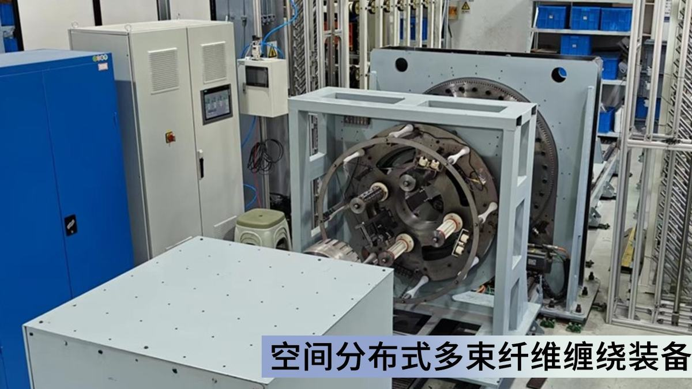
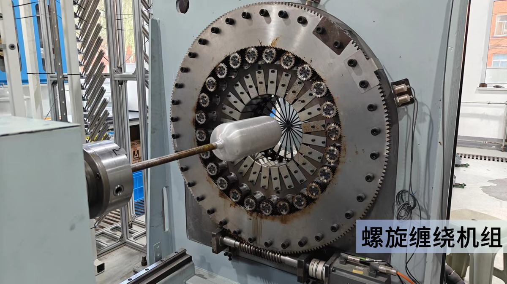
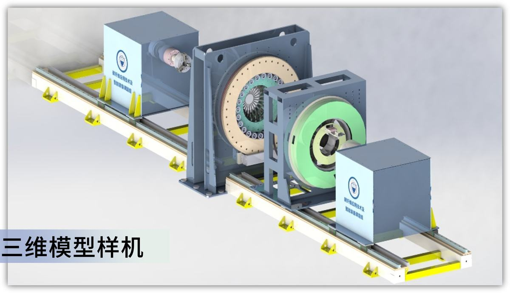

碳纤维缠绕制品因其高比强度、高比刚度与轻量化特性，广泛应用于航空航天、武器装备、氢能储运、医疗卫生等领域。然而传统纤维缠绕技术采用单丝嘴供纱，其制品存在同层纤维交叉导致的局部应力集中，且生产效率低的问题，严重制约了纤维缠绕技术的推广应用。本项目于国内首次提出了多束碳纤维同步缠绕理论及其空间分布式协同驱动构型原理，通过设计纤维群同步运动轨迹，研究多丝束空间悬垂及柔性特征对落纱轨迹的影响，开发了多束纤维平行无间隙缠绕工艺；进而搭建了多吐丝嘴同步缠绕装备，通过动力学设计方法进行位姿纠偏，提升其运动性能；同时，采用分数阶模型精确表征丝束张力的非线性特征，设计了缠绕过程中高效稳定的多丝束张力协同调控框架。研究成果演化或繁衍了完整的多束碳纤维缠绕装备应用示范基地，为高性能、高效率的碳纤维缠绕工艺与装备设计开辟新领域，实现了我国在多束纤维同步缠绕领域从0到1的突破。
（1）多束碳纤维平行无间隙缠绕工艺开发
项目组于国内率先提出了“编缠一体化”思想，开创了国内多束碳纤维同步缠绕新领域。采用数十束纤维同步供纱，吐丝嘴呈现空间分布状态，同层纤维缠绕平行无交叉，开发了多束平行无间隙缠绕工艺。
（2）空间分布式多束纤维缠绕装备设计
设计并完成了国内首台空间分布式多束缠绕装备落地，形成了多束缠绕新技术。构建了多执行部件同步运动构型的优选评价体系，实现多束碳纤维同步缠绕装备优化设计。
（3）多束碳纤维同步落纱运动轨迹优化
基于动力学特性分析，实现了多丝嘴协同运动位姿纠偏，相关软硬件完全自主可控。基于多齿间赫兹接触阻尼设计落纱系统，实现了多束纤维同步缠绕系统动力学行为精确表征。
（4）多束碳纤维缠绕张力控制框架设计
率先开展了多束系统非线性理论模型的张力可控机理研究，控制精度可达5%以内。设计了基于改进的时变参数分数阶PID控制器的控制方案，构建了精细化模型及控制框架，实现了复杂扰动下张力控制系统性能提升。
授权发明专利50余项，国际专利8项，发表高水平论文19篇。
采用多束同步缠绕技术生产复合材料制品，碳纤维使用量节省37%，生产效率提升19%。累计为企业创产值8亿元，新增利润5000万元。打破国外在多束缠绕领域技术垄断，使我国高压储氢容器缠绕技术水平踏入世界第一方阵。
本项目针对传统缠绕工艺中纤维交叉架空、缠绕效率低及制品质量一致性较差等问题，设计了多束碳纤维高精度缠绕工艺及装备，如图1所示，吐丝嘴呈现空间分布状态，其采用数十束纤维同步供纱，同层纤维缠绕平行无交叉，能充分发挥纤维复合材料的性能优势，显著提升缠绕效率。且多束缠绕制品兼具应力集中小、抗冲击能力强、疲劳寿命长及产品一致性高等优点，可助力纤维缠绕领域迭代升级。
图1 多束纤维缠绕装备结构示意图
首先，设计了纤维展纱宽度定量化控制策略，提出了“夹嵌鳞纹”复合结构缠绕方案，获得了缠绕制品层间结合性能高效优化方法，形成了连续稳定的多束碳纤维缠绕工艺。其次，基于多束碳纤维缠绕空间分布式协同驱动机构之间的运动输入-输出匹配规律，明确机构各部分实现预期运动的自由度需求，设计了多束碳纤维同步缠绕装备。再次，构建了多束碳纤维缠绕系统的刚柔耦合动力学模型，揭示了传动系统的非线性动力学行为特征，基于多齿间赫兹接触阻尼设计了落纱系统，提高了多束缠绕系统各部件协同运动精度。最后，建立了精确表征多束碳纤维缠绕张力系统非线性特征的分数阶模型，构建了缠绕过程中张力波动调控机制，设计了控制性能高效的张力调控策略及优化方案，实现缠绕张力的精确、高效控制。
本项目得到了山西省重点研发计划、中央军委科技委 173 重点（原GF973）项目、国家自然科学基金、山西省科技重大专项等项目的资助，同时项目成果受到黄庆学、赫晓东、郑津洋等院士的充分认可和肯定。经日本工程院外籍院士董勤喜教授和中科院煤化所原副所长吕春祥研究员等组成的专家组鉴定：“该成果创新性显著，整体技术达到国际先进水平”。项目相关成果在海控复合材料有限公司、中国船舶重工集团有限公司和北京天海氢能装备有限公司等单位得到应用实践，其综合经济效益和社会效益显著，为我国氢能产业的发展和进步做出了贡献并起到示范作用。总体设计路线如图2所示。
图2 本项目设计路线图
创新点一：多束碳纤维平行无间隙缠绕工艺开发
本项目针对传统缠绕工艺中纤维交叉架空、缠绕效率低等问题，于国内首次提出“编-缠一体化”思想，开创性地设计了一种多束碳纤维平行无间隙缠绕工艺。其先进性在于采用数十束纤维同步供纱，吐丝嘴呈现空间分布状态，同层纤维缠绕平行无交叉，能充分发挥纤维复合材料的性能优势，螺旋缠绕效率提升可达50倍；同时，多束缠绕制品兼具应力集中小、抗冲击能力强、疲劳寿命长及产品一致性高等优点，如图3所示为纤维交叉对应力分布的影响。本项目基于新型工艺创新地设计了国内首台多束碳纤维同步缠绕设备，采用齿轮盘啮合驱动圆周均布的锥齿轮（一种新型多束纤维螺旋缠绕设备，CN113334750A，其余相关专利8余项），从而保证传递导丝管的转角同步运动；通过螺旋盘槽口与导向盘槽口组合，转动螺旋盘，从而保证吐丝口同步进行径向运动；通过旋转驱动系统与镜像移动系统的共同控制，从而保证圆周均布的导丝管运动一致。
图3 纤维交叉对应力分布的影响
具体研究内容如下：
（1）建立了多束碳纤维同步缠绕轨迹模型，揭示了碳纤维缠绕角度、缠绕厚度、缠绕路径及缠绕制品几何形状突变对缠绕轨迹精度的影响规律。利用Runge-Kutta法建立非测地线稳定缠绕的中心转角方程，研究了缠绕角和滑移系数对中心转角的影响。以多束纤维稳定缠绕和均匀覆盖为约束条件，通过Fminsearch函数优化算法求解不等极孔缠绕角和滑移系数的连续对应关系，推导了悬纱距离、纤维束空间位置与丝嘴位姿变化的关系式。
（2）探究了纤维间滑移系数、架空度、交叉重叠度对连续稳定缠绕的耦合作用机制，构建了多束碳纤维缠绕空间力学模型；建立了整体空间力学完全相似模型，探明了多束纤维缠绕的静力特性及动态响应规律。结合多叠层增量本构模型，利用平面应变修正矩阵，将一维增量本构关系式推广至二维，搭建了缠绕尺寸衔接部分的空间力学模型；利用相似理论中的量纲分析法，建立了整体空间力学模型，为分析多束缠绕设备的静力特性及动态响应奠定了基础。
（3）揭示了多束缠绕纤维丝束层间、层内排布规律，探明了多束纤维平行无间隙缠绕机制；研究了不同缠绕方法对纤维层间性能的影响，提出了缠绕制品层间结合性能的优化方法。分析纤维层间的受力状态，建立了不同空间位置的纤维张力模型；采用图像分析法测定不同缠绕角、不同树脂含量下纤维展纱宽度，对缠绕末端多参数耦合作用下的纤维张力等效转化，确定了多束碳纤维平行无间隙缠绕工艺下展纱宽度与张力的定量化关系。
（4）基于多束与单束缠绕工艺下的I、II型层间断裂表征手段，在无同层纤维交叉的多束缠绕复合材料层间，周期性嵌入单束缠绕的鱼鳞状结构铺层，制备多束纤维层间夹嵌鳞纹复合缠绕制品，研究不同缠绕工艺对纤维层间断裂性能的影响机理，进而优化多束碳纤维缠绕工艺制品的层间结合强度。图4为多束平行无间隙缠绕工艺设计流程。
图4 多束平行无间隙缠绕工艺设计流程
在应用效益方面，对比国内外目前传统的单束纤维缠绕工艺，本项目设计的多束纤维同步缠绕工艺，旨在解决纤维交叉架空导致的制品性能差、缠绕效率低及制品质量一致性较差等问题，核心技术与装备已应用于山西平阳重工机械有限责任公司。分批次开展不同几何尺寸内衬的缠绕实验，结果显示本项目压力容器产品质量稳定性指标提高了13%，生产效率提高19%，生产成本降低15%，近三年新增产值3412万元，新增利润239万元，新增税收643万元。部分结果已发表于一区TOP期刊《Journal of Materials Research and Technology》（IF=6.2）（Experimental and numerical analysis of low-velocity impact behavior of wound products using multi-filament winding technique）、二区TOP期刊《International Journal of Hydrogen Storage》（IF=8.1）（A novel multi-filament winding technique for type III composite pressure vessel: From CFRP cross-undulation concept to structural performance validation），其余相关论文8篇。
在社会价值方面，本项目提出的新型缠绕工艺缠绕效率更高，缠绕制品性能更好，不仅推动了材料科学和机械工程等相关领域的技术进步，而且在促进国内产业升级、提高国际竞争力方面发挥重要作用。这不仅减少了对国外缠绕技术的依赖，还有助于降低成本，提高产品质量，从而在全球市场中占据更有利的竞争位置。
创新点二：空间分布式多束纤维缠绕机构设计
本项目针对单束纤维缠绕机螺旋缠绕阶段效率低，难以满足当前国防军工复合材料构件大批量生产需求的问题，创新性地设计了多束纤维缠绕机构，主要分为纤维环向缠绕装置和螺旋缠绕装置两大部分，如图5所示。纤维缠绕过程中，决定缠绕效率的关键在于螺旋缠绕阶段，单束纤维缠绕机只有单个吐丝嘴按照预设轨迹进行往复缠绕运动，即使增加工位数也无法显著减少螺旋缠绕阶段的用时。多束纤维缠绕机构的先进性在于所设计的螺旋缠绕机构由数十个吐丝嘴在环向空间内均匀排布组成，当芯模到达指定位置时，多个吐丝嘴按照预定轨迹完成同步出纱与运动，进而快速实现同层纤维的无交叉紧密排布，在国内相关领域属于首创。本项目创新性地设计出两种装置分别用于螺旋和环向缠绕（一种纤维缠绕装置，CN 113334748 B），其中螺旋缠绕装置包括架体和导丝头，架体上设有通孔，若干个导丝头沿通孔中心呈环形分布并与架体转动连接，各导丝头内均可伸出纤维，当芯模运动至预设位置时，各导丝头在内外啮合齿轮的作用下同步运动（一种新型多丝束纤维同步螺旋缠绕设备，CN 113211825 B，其余相关专利15余项），使芯模通过单次运动即可完成一层纤维螺旋缠绕，大幅减少了螺旋缠绕过程用时，同时避免了单束纤维缠绕过程出现的纤维交叉现象，极大地规避了由纤维交叉引起的应力集中问题，提高了纤维缠绕制品的服役性能。
图5 多束纤维缠绕机构总体结构设计
具体研究内容如下：
（1）基于多束纤维同步缠绕工艺和多束纤维缠绕理论，对空间分布式协同驱动机构进行反演，分析了多束纤维同步供纱功能需求与基本运动结构间映射关系，从机构学角度对缠绕过程进行功能分解和协调动作序列研究，通过虚位移矩阵法明确了各部分机构实现同步纤维缠绕所需的自由度。揭示了纤维缠绕工艺中吐丝嘴与芯模间相对坐标关系，分析了多执行部件的同步运动轨迹，根据吐丝嘴几何平面与张力向量、出纱向量之间的正交关系，运用坐标转换与欧氏空间标准内积法推导了多束纤维缠绕执行机构在限定布置工作空间内的位姿关系。
（2）阐明了多束纤维同步缠绕执行机构运动输入点与执行机构的运动匹配规律，采用扩展质量功能配置法将用户需求、性能指标转化为产品定义，应用多束纤维缠绕运动行为的多层表示方法，建立了多束纤维缠绕机构的原理库、结构库、行为库、构型库，结合由实例抽象、例化出的本体库、样体库，形成了“功能-运动行为-结构”相统一的底层设计模型。基于“型综合”原理和模糊聚类方法，建立了大批量生产模式下稳定、同步运动的空间分布式协同驱动缠绕机构方案群。
（3）探究了执行机构运动输入点位置、数目对多束纤维高精度同步缠绕行为的影响机制，明确了各部分机构的尺寸精度、传动效率及可靠性要求，建立了力学性能及运动学特性评价体系，采用雅可比矩阵对机构灵巧度与静刚度开展了性能分析，构建性能结构映射机制，分析理想映射、冗余映射与耦合映射关系，运用模糊聚类方法确定了空间分布式协同驱动纤维缠绕机构的优选构型。
在应用效益方面，本项目设计的多束纤维缠绕机核心在于利用数十个吐丝嘴按照预定轨迹实现同步运动，实现了缠绕效率的大幅提升，同时避免了单束缠绕过程中的交叉现象，核心技术已应用于多家氢能装备生产企业，实现了数千支Ⅲ型及Ⅳ型碳纤维高压储氢容器的生产，项目相关技术在北京天海氢能装备有限公司实现年新增利税值283万元，销售利润增加约5%，显著提高了市场竞争力。此外，对单束和多束纤维缠绕制品进行的相关试验表明，多束纤维缠绕工艺应力集中现象明显减少，应力分布情况得到改善，在相同缠绕层设计下，多束缠绕工艺封头厚度得到明显补强，如图6所示，验证了多束纤维缠绕工艺对封头补强作用及应力均匀分布的有益效果。
图6 多束纤维缠绕封头补强及爆破结果
在社会价值方面，本项目提出的多束纤维缠绕机其关键部件均为自主开发且拥有自主知识产权，突破了国外的技术封锁，加速了我国高效率纤维缠绕设备关键核心技术自主化发展，对比当前国内外广泛使用的多工位单束纤维缠绕机，制品服役性能更可靠，疲劳寿命更高，同时极大提高了碳纤维高压储氢容器等制品的加工效率，实现了“质”和“量”的双重提升。所开发出的多束纤维缠绕机，将复杂功能进行集成化设计，大大减小了设备的占地面积，配置灵活，减少了土建投资，更具有社会应用价值。并且，对比发现相同承压能力的高压储氢容器，使用多束纤维缠绕机所消耗的纤维用量低于单束纤维缠绕机，降低了生产成本，在大批量应用背景下实现了资源的节约，更符合我国基本国策。
创新点三：多束碳纤维同步落纱运动轨迹优化
本项目针对多束碳纤维缠绕机中关键执行部件的间隙与振动导致丝嘴的运动轨迹精度低等问题，创新性地提出多束碳纤维缠绕机机构刚柔耦合非线性动力学模型如图7所示。基于多束纤维缠绕工况下传动机构和执行机构的非线性动力学行为，构建了非线性约束下齿系传动部件的多齿间赫兹接触阻尼模型，阐明了缠绕系统齿轮间隙和柔性变形对吐丝嘴轨迹变化的影响机理，实现了多束碳纤维同步缠绕系统动力学行为的精确表征，满足了纤维群落纱轨迹高精度的工艺要求，明确了复杂缠绕工况下纤维等非线性柔性部件的动态特征（一种超多丝束纤维快速缠绕设备，CN113336002B，其余相关专利10余项）。此外，利用多束碳纤维缠绕机实验采集的缠绕轨迹数据作为基准来评估仿真模型的准确性，对模型中的关键参数进行精细校准，进一步提高模型的预测精度。
图7 多束碳纤维同步缠绕系统动力学模型构建方法
具体研究内容如下：
（1）研究了多束纤维缠绕装备驱动、执行机构在不同缠绕工况下的运动状态，运用解释结构模型方法对多束缠绕装备各维度、各模块间的相互关系进行综合分析，进而设计了不同缠绕工艺下驱动、执行机构间的运动关系模型。运用ADAMS动力学分析软件，建立虚拟样机优化、回溯及反馈环节并形成设计闭环，获得了纤维缠绕虚拟样机设计方法，基于缠绕系统动力学行为，设计了虚拟样机模型。
（2）分析螺旋缠绕、环向缠绕过程的复杂约束关系与动力学特性，建立了缠绕系统多刚体模型。研究多束纤维缠绕工况下传动部件和执行部件的柔性特征，根据多柔体系统动力学理论采用模态展开法与集中质量法，建立了纤维的单柔体动力学模型，分析了其对系统动力学的影响。在单柔体动力学建模过程中，持续对模型进行优化设计，进一步提高了模型的综合性能和预测精度。
（3）研究了机构输出动力和实际缠绕轨迹的关系，对供纱装置轨迹进行逆运动学分析，确定了其末端达到期望缠绕点时的最优路线，并得到了缠绕系统输入参数与输出结果之间的动态响应关系。探究了载荷传递和齿轮变形对系统间隙的影响机理，研究了缠绕系统齿轮间隙和柔性变形对吐丝嘴轨迹变化的影响机制，提高了多束碳纤维缠绕传动系统模型的准确性。
在应用效益方面，对比生产过程中瓶口与瓶腔间壁厚差别较大而难以生产的问题，本项目设计的多束碳纤维缠绕系统的刚柔耦合动力学模型与非线性约束下齿系传动部件的多齿间赫兹接触阻尼模型，旨在阐明缠绕系统齿轮间隙和柔性变形对吐丝嘴轨迹变化的影响机理，实现设备的精确控制。核心技术已应用于山东群泰特种装备有限公司高压储氢容器生产线，提升了产品的整体质量，降低了生产成本和不合格率，带来了显著的经济效益，年新增利税值高达680万元，极大地提升了公司市场竞争力，实现了市场竞争力升级。
在社会价值方面，该项目提出的多束缠绕系统动力学建模方法，推动缠绕科技进步与创新、提高储氢容器的生产效率与质量、提升多束碳纤维缠绕设备的安全性与可靠性，推动了我国多束缠绕关键技术自主化，突破了国外核心技术壁垒；通过本项目的实施，我国将会在氢能产业上实现快速发展，降低能源消耗与环境污染；多束碳纤维同步缠绕系统动力学模型的应用还可以提高设备的可靠性和安全性，减少事故和故障的发生，保护人们的生命财产安全；为多束缠绕技术研究探索出了一条新路，对建设新材料制造强度具有重要战略意义。
创新点四：多束碳纤维缠绕张力控制框架设计
本项目针对多束缠绕过程中因多源扰动导致的系统响应慢、张力控制精度低等问题，创新性地提出基于前馈补偿的张力观测模型和波动抑制策略，控制系统整体结构如图8所示。
图8 张力控制系统整体结构设计框图
基于缠绕工艺确定张力浮动范围，明晰纤维在机组间的传递关系，建立了张力控制系统分数阶数学模型；利用实验采集的缠绕张力数据，提取信号特征，预测了引起张力波动的未知多源扰动并拟合等效输出曲线；设计了基于改进的时变参数分数阶PID控制器和张力波动观测器的复合控制方案，实现分别对噪声信号、不确定周期扰动的衰减和抑制，最终将张力波动稳定控制在较小范围内，控制精度可达±5%。其先进性在于设计了多束碳纤维缠绕张力控制框架，实现了张力系统复杂扰动条件下控制性能的提升。本项目创新地采用分数阶理论建立系统模型，并提出了基于前馈补偿的张力观测模型和波动抑制策略（一种多束缠绕设备联合驱动系统的张力控制方法，CN115847786B，其余相关专利8余项）、《Computer Modeling in Engineering & Sciences》（IF=2.2）（Research on Anti-Fluctuation Control of Winding Tension System Based on Feedforward Compensation）、《Transactions of the Institute of Measurement and Control》（IF=1.7）（Research on anti-vibration tension control based on self-coupling fractional-order PID），针对时变参数分数阶PID控制器的参数整定问题，本项目组以系统响应快速性和稳定性为性能指标，建立优化算法自适应评价函数，利用改进的瞪羚算法实现了张力控制器的快速调参《International Journal of Robust and Nonlinear Control》（IF=3.2）（Optimal design of time-varying parameter fractional order controller using ameliorated gazelle optimization algorithm），有效提高了多束缠绕系统张力控制性能，如图9所示。
图9 优化前后张力控制性能对比图
具体研究内容如下：
（1）研究了张力控制系统内部模型的非线性与时变特性，通过力矩平衡原理得到放卷辊、摆杆等关键构件动态力矩平衡方程，分析了系统多参量间的耦合关系，进而分析张力影响因素。根据多束缠绕系统的元件参数和结构，推导关键构件数学模型，结合电机特性及电路原理，构建了可准确描述实际张力控制系统物理特性的表征框架，搭建了多自由度耦合的多束碳纤维缠绕张力系统分数阶等效模型。
（2）探究了张力系统在多束缠绕模式下的动态行为与模型变量的影响机理，分析了系统的运动状态，以分数阶阶数、阻尼系数以及外激励幅值等模型参数为自变量，建立了系统不同演化路径的分岔模式，揭示了多束纤维缠绕非线性张力系统失稳状态下模型的分岔机制。利用Poincare截面确定系统的混沌运动现象，解决了该系统存在的同宿异宿问题，解耦上述参数对于系统动态行为的失稳影响规律，构建了缠绕过程中由外激励时变导致的张力波动调控机制。
（3）以多束碳纤维缠绕样机为实验平台，进行了伺服位置环控制回路设计、二自由度张力调节装置设计与放卷系统优化，构建了执行、监测和反馈系统，基于TCP/IP的通信协议，采用网络通信手段进行不同工艺参数下张力波动控制实验。结合分数阶及模糊控制理论，搭建了模糊分数阶PID控制框架，实现了控制器参数在线实时整定。通过实验研究了多束碳纤维缠绕过程中张力设定值、缠绕速率等工艺参数对于张力波动率与缠绕制品性能的影响，优化了工艺参数，提出了“张力-性能”一体化调控方法。
在应用效益方面，对比传统的系统数学建模方式，其并未考虑强干扰、多参数耦合等因素对系统的影响，导致实际缠绕设备模型参数与理论模型之间存在较大偏差，不利于针对性地设计控制器；传统的PID控制器参数整定复杂，难以获得最佳参数组合，同时缺少抵抗外界干扰的能力，不利于提高控制精度。本项目设计的时变参数分数阶PID控制器和张力波动观测器的复合控制方案，旨在实现恒张力控制的快速性和平稳性，核心技术已应用于海控复合材料科技有限公司高压储氢容器生产线，有效提高了产品质量及性能。氢燃料系统工作压力达到了70MPa，缠绕效率提升17%，固化效率提高12%，成材率提高10%以上，工艺稳定可靠，产生了一定的经济效益。
在社会价值方面，该项目提出的张力控制策略精度更高，推动了我国多束缠绕关键技术自主化，突破了国外核心技术壁垒。通过本项目的实施，我国将会在氢能产业上取得重大发展，促进地区经济发展和经济结构转型，创造新的就业机会和经济增长点；加强了国内产学研各行业之间的技术交流，加快了科研成果在生产中的实际应用；为多束缠绕技术研究探索出了一条新路，对建设新材料制造强度具有重要战略意义。



国内首创多束碳纤维同步缠绕,解决单丝嘴供纱应力集中与低效
缠绕装备
间接服务航天/氢能/医疗装备
碳纤维制品(氢瓶/箭体)产业升级关键装备
复合材料装备国产化样本